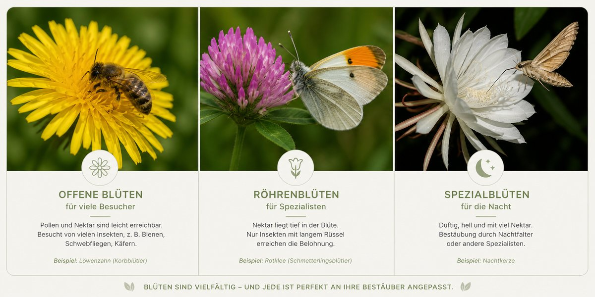
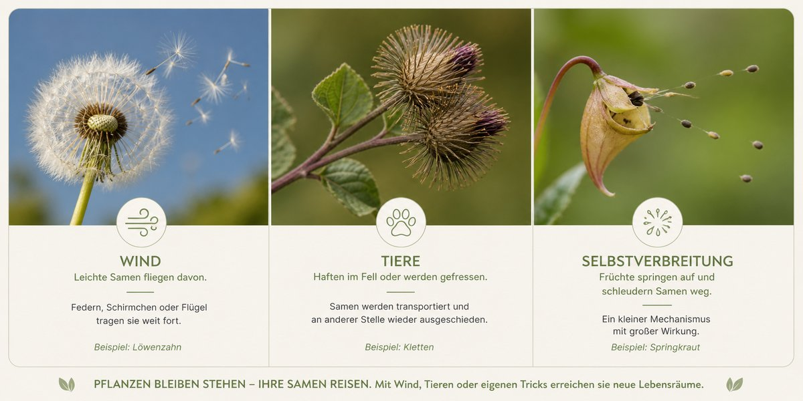

Wie Pflanzen Bestäuber anlocken und ihre Samen auf Reisen schicken.
Blütenökologie – wer besucht wen?

Blüten sind angepasst – nicht zufällig gebaut.
Offene Blüten→ für viele Insekten zugänglich (z. B. Löwenzahn)
Röhrenblüten→ nur für Spezialisten mit langem Rüssel
Nachtblüher→ hell und stark duftend (für Nachtfalter)
Täuschblumen→ locken ohne Belohnung
👉 Fazit: Blütenform, Farbe und Duft bestimmen, welche Tiere kommen – und wer draußen bleibt.
Samenverbreitung – wie Pflanzen reisen

Pflanzen sind ortsfest – ihre Samen nicht.
Windverbreitung
Leichte Samen mit „Flugapparat" – z. B. Löwenzahn.
Tierverbreitung
Samen haften im Fell oder werden gefressen → werden an anderer Stelle wieder ausgeschieden.
Selbstausbreitung
Früchte springen auf und schleudern Samen weg.
👉 Kurz gesagt: Pflanzen nutzen Wind, Tiere oder eigene Tricks, um neue Lebensräume zu erreichen.
Setze die richtigen Begriffe ein!
Tippe ein Wort aus der Wortbank an – es springt in die nächste Lücke. Eine gefüllte Lücke kannst du durch Antippen wieder leeren. Zum Schluss auf „Prüfen“ tippen.